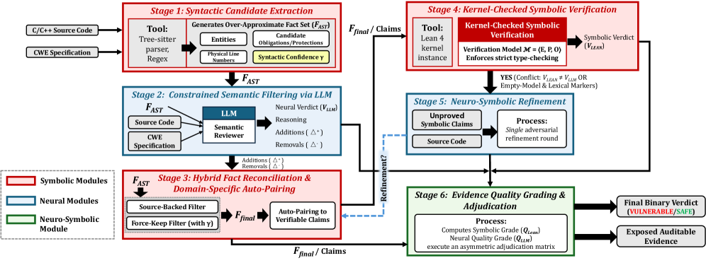

Extracted code facts are compiled into a Lean 4 verification model whose kernel checks whether safety obligations are provably discharged.
Abstract
Ask a large language model (LLM) whether a pointer dereference is safe, and it can often produce a plausible justification for “yes”. The difficulty is that a fluent justification is not a proof. This gap is precisely where automated vulnerability detection lives: deciding, for a given operation in source code, whether a memory safety defect such as a null dereference, use-after-free, or double free can actually occur. We trace the unreliability of LLM-based vulnerability detection to a mechanism, the premature discharge of safety obligations, and argue that the remedy is not better prompting but a separation of roles: the component that interprets the code must not also be the one that decides a safety obligation is met. In this paper, we present LeanGuard, a neuro-symbolic framework that assigns each act to the side equipped for it. On the neural side, an LLM serves strictly as a semantic filter over candidate facts extracted from the abstract syntax tree (AST): it prunes spurious facts and keeps the real ones, but never discharges an obligation or decides the verdict on its own. On the symbolic side, the surviving facts are compiled into a verification model in Lean 4 (a formal proof assistant whose kernel accepts a conclusion only when it is formally proved), where every dangerous operation must be matched by a guard that provably covers it in scope; absent such a guard, the obligation stays open rather than being argued away. Because a function rarely arrives with full context, this symbolic model is necessarily partial: an unproved obligation is not yet a defect. An evidence-aware adjudicator therefore weighs the symbolic and neural verdicts by the quality of each. We instantiate the framework on five CWE classes to ask how far this division of labor can be pushed.
Problem
LLMs prematurely discharge safety obligations when detecting memory-safety defects (null dereference, use-after-free, double free), producing fluent but unproved verdicts. Rule-based static analyzers are auditable but semantically limited. Judging a single function reliably without full program context is hard.
Approach
LeanGuard is a neuro-symbolic framework separating roles: an LLM acts only as a semantic filter over candidate facts extracted from the AST, pruning spurious ones but never deciding verdicts. Surviving facts are compiled into a partial verification model in Lean 4, where each dangerous operation must be matched by a guard that provably covers it; unproved obligations stay open. An evidence-aware adjudicator weighs symbolic and neural verdicts by quality. The framework is instantiated on five CWE classes.

Figure 1 : Overview of the LeanGuard framework.
Results
Across five CWE classes and three backends (Claude Code, Codex, Pure LLM), LeanGuard improves F1 over baselines in all fifteen settings and shows lower variance across runs. Improvements are statistically significant in several configurations.
Dataset
Backend
ΔF1
p
Sig.
CWE-120
Pure LLM
+0.044±0.010
0.0162
Yes
CWE-416
Codex
+0.149±0.006
0.0006
Yes
CWE-416
Pure LLM
+0.167±0.028
0.0092
Yes
CWE-476
Codex
+0.049±0.013
0.0245
Yes
CWE-476
Pure LLM
+0.066±0.011
0.0089
Yes
F1 improvement per backend and CWE (mean ± σ, significance)